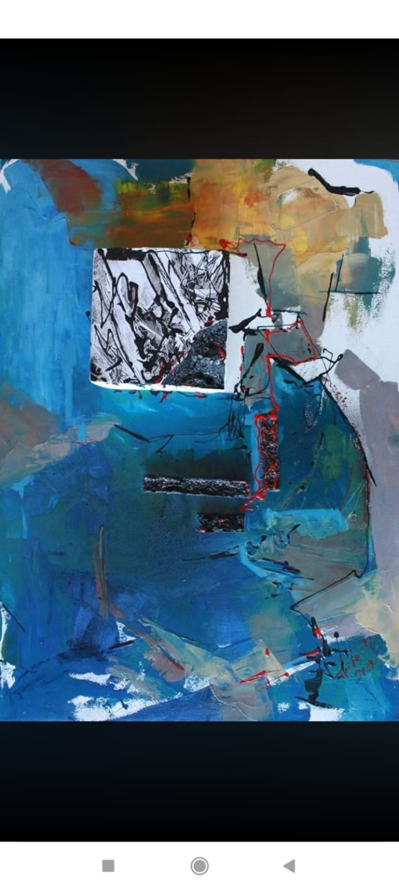

Operă originală
Compoziție abstractă
Fișa acestei lucrări va fi completată cu informațiile confirmate de artist: tehnică, dimensiuni, an și preț.
Disponibilitate: de confirmat
Solicită această lucrare
Fișa acestei lucrări va fi completată cu informațiile confirmate de artist: tehnică, dimensiuni, an și preț.
Disponibilitate: de confirmat
Solicită această lucrare